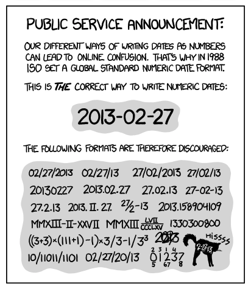

Dropbox/Google Drive
Dropbox/Google Drive#
This is the organization of each student’s folder with Nikola and/or Julien. You can use Dropbox or Google Drive, but not both (to avoid duplication). Please let us know which one you want to use, then please organize folders as follows:
| Folder | Description |
|---|---|
admin
|
administrative stuff such as Polytechnique documents, grades, CV |
biblio
|
not ALL your biblio, but some interesting stuff that we exchange temporarily |
conferences
|
subfolder prefix is the date of the event, e.g. 20150530_ISMRM/
|
fellowships
|
subfolder prefix is the date of the deadline, e.g. 20150314_FRQS/
|
manuscripts
|
subfolder name is year of first submission + journal, e.g.
|
misc
|
Anything you want |
reports
|
Include progress reports (format: Google Slides, pptx, keynote or pdf).
Google Slides are preferred because comments can easily be added. Prefix
name should start with YYYYMMDD_. Example: 20170515_report.pptx
|
results
|
Snapshots/results of your experiments. Prefix should start with YYYYMMDD.
Example: 20150120_dmri_nogse/
|
Note
Note for Intern Students: You will only need to create the admin, biblio, and reports folders.
GENERAL RULES:
NEVER USE SPACE OR ACCENTS IN FILE NAMES! (Unix-unfriendly).
Date format should always be
YYYYMMDD(orYYYY-MM-DD). See this: https://xkcd.com/1179/

Thank you 
P.S. For projects involving multiple students, a “project” folder is created under Google Drive/NeuroPoly/Projects.